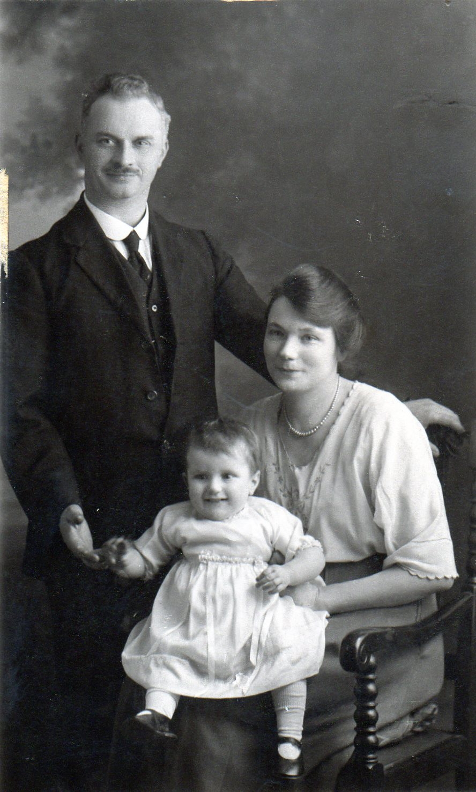
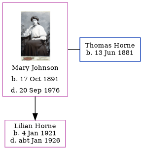

Mary Ann Horne (née Johnson) 1891 - 1976
[ Home ] | [ Calendar ] | [ Surnames Index ] | [ Errors ] | [ Family History ]Mary Johnson, the wife of Thomas William Horne (the first cousin twice-removed on the father's side of Nigel Horne), was born in Pimlico, London, England on 17 Oct 18911,2 and married Thomas (a postman with whom she had 1 child, Lilian Mary) at St Thomas Church, Finsbury Park, London, England on 12 Oct 19185.
During her life, she was living at 18 Derby Buildings, St Pancras, London on 19 Jun 19211; and at 137 Derby Buildings, St Pancras, London on 29 Sept 19392.
She died on 20 Sept 1976 in Palmers Green, London, England3,4.
Children
- Lilian Mary was born on 4 Jan 1921
Citations
- 1921 Census Of England & Wales - Findmypast (was age 29 and the wife of the head of the household)
- 1939 Register - Findmypast (was the wife of the head of the household)
- England & Wales Government Probate Death Index 1960-2019 - Findmypast
- England & Wales deaths 1837-2007 - Findmypast
- England & Wales Marriages 1837-2005 - Findmypast
Media
Thomas Horne - Mary Johnson

Thomas Horn - Mary Ann Johnson - Lily Horn

Mary Ann Johnson
1939 Register Transcription - TNA-R39-0485-0485E-008-38
England & Wales marriages 1837-2008 - BMD/M/1918/4/AZ/000606/147
England & Wales Government Probate Death Index 1960-2019 - GBOR/GOVPROBATE/A/1975-1977/00457097
Family Tree
Map
Generated by ged2site. Last updated on Jul 3, 2024
Known Issues
No records of living with anyone